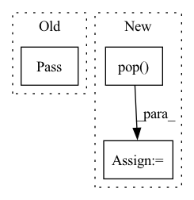

Pattern ID :21355
Before Change
"leave": True
}
for _ in tqdm(concurrent.futures.as_completed(futures), **kwargs):
pass
return futures
After Change
)
new_tasks_to_schedule = 0
for fut in done:
original_task = futures.pop( fut)
result_list.append(fut.result())
del original_task, fut
new_tasks_to_schedule += 1
pbar.update(1)In pattern: SUPERPATTERN
Frequency: 3
Non-data size: 3
Instances Fragment ID: 68178803
Project Name: dsgoficial/pytorch_segmentation_models_trainer
Commit Name: 8310105da45a252880fa3cc8f6405e70c05722fc
Time: 2021-05-27
Author: philipeborba@gmail.com
File Name: pytorch_segmentation_models_trainer/tools/parallel_processing/process_executor.py
M Class Name: Executor
N Class Name: Executor
M Method Name: execute_tasks(3)
N Method Name: execute_tasks(2)
M Parent Class:
N Parent Class:
M File Name: pytorch_segmentation_models_trainer/tools/parallel_processing/process_executor.py
N File Name: pytorch_segmentation_models_trainer/tools/parallel_processing/process_executor.py
M Start Line: 33
M End Line: 50
N Start Line: 33
N End Line: 58
Before Change
@abc.abstractmethod
def get_stats(self, *args) -> Dict:
pass
After Change
for name in reversed(self.pipeline_per_stage_statistics):
new_name = f"p{stage_id}_{name}"
old_name = name
fit_res[new_name] = fit_res.pop( old_name)
return fit_res
Fragment ID: 68178806
Project Name: saareliad/ftpipe
Commit Name: 9f3b21d95dab8f72ea8b99854ce2fda2014b8c91
Time: 2020-03-30
Author: saareliad@campus.technion.ac.il
File Name: pipeline/stats/interface.py
M Class Name: Stats
N Class Name: Stats
M Method Name: get_stats(2)
N Method Name: get_stats(1)
M Parent Class: abc.ABC
N Parent Class: abc.ABC
M File Name: pipeline/stats/interface.py
N File Name: pipeline/stats/interface.py
M Start Line: 128
M End Line: 128
N Start Line: 132
N End Line: 137
Before Change
node_info.update({"last_heartbeat_time": now})
as_json = json.dumps(node_info)
self.node_table.put("worker", as_json)
pass
def _parse_resource_list(self):
node_resource_dict = {}
resource_split = self.static_resource_list.split(",")After Change
now = time.time()
node_info = self.node_resource_dict.copy()
node_info.update({"last_heartbeat_time": now})
node_name = node_info.pop( "node_name")
as_json = json.dumps(node_info)
self.node_table.put(node_name, as_json)
pass
Fragment ID: 68178807
Project Name: oap-project/cloudtik
Commit Name: 2bb92516906b943d16d9d56e99fbf8e70fc5500f
Time: 2022-02-16
Author: Qing.Yao@intel.com
File Name: python/cloudtik/core/_private/service/cloudtik_node_coordinator.py
M Class Name: NodeCoordinator
N Class Name: NodeCoordinator
M Method Name: send_heart_beat(1)
N Method Name: send_heart_beat(1)
M Parent Class:
N Parent Class:
M File Name: python/cloudtik/core/_private/service/cloudtik_node_coordinator.py
N File Name: python/cloudtik/core/_private/service/cloudtik_node_coordinator.py
M Start Line: 93
M End Line: 94
N Start Line: 90
N End Line: 95